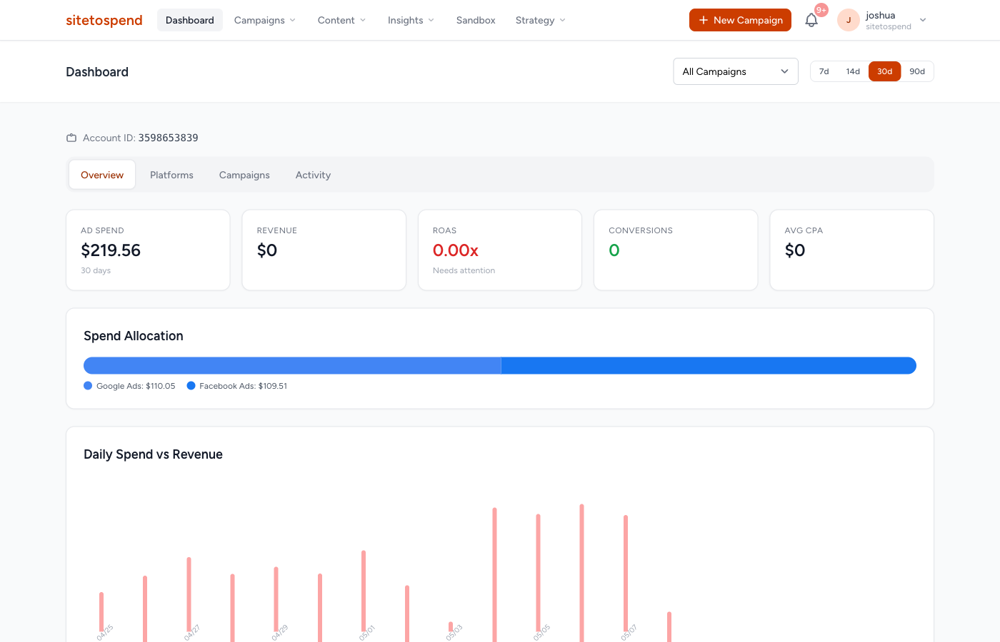
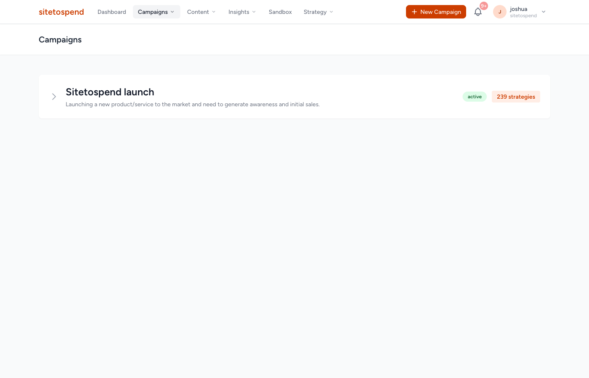
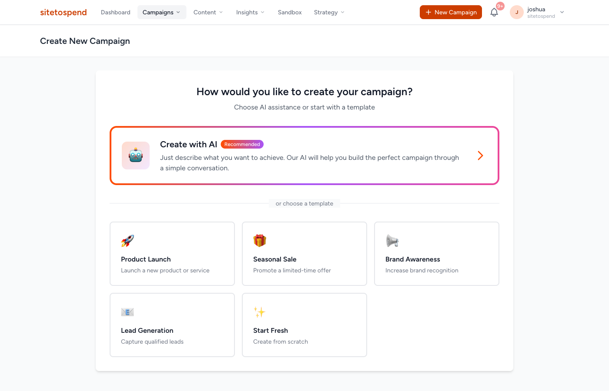
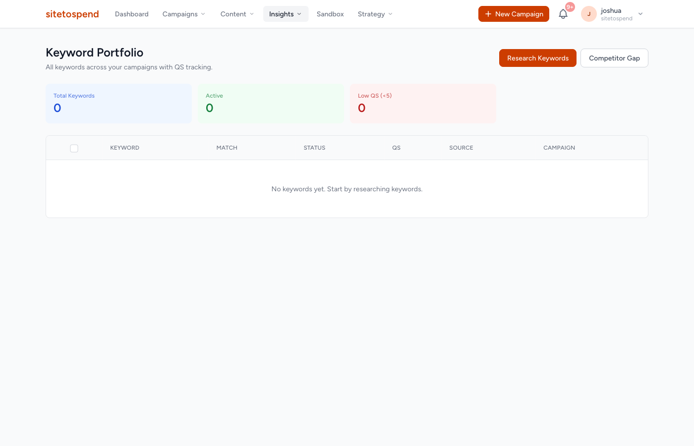
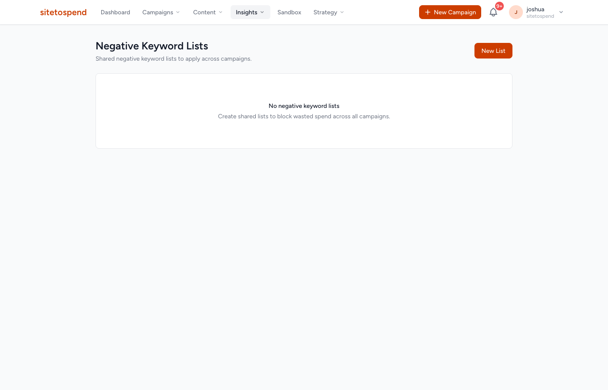
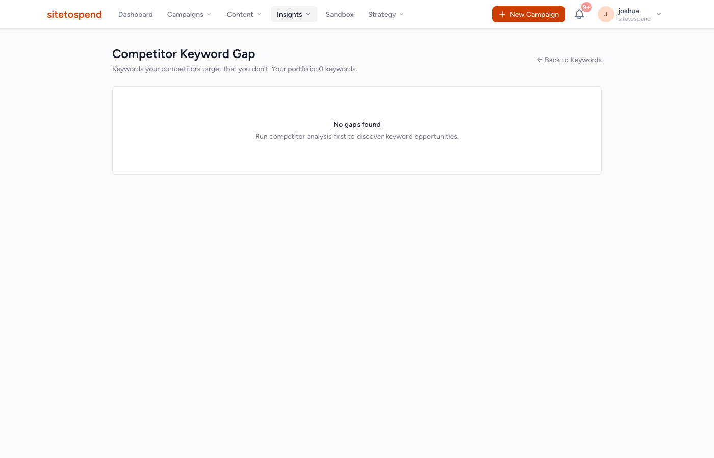
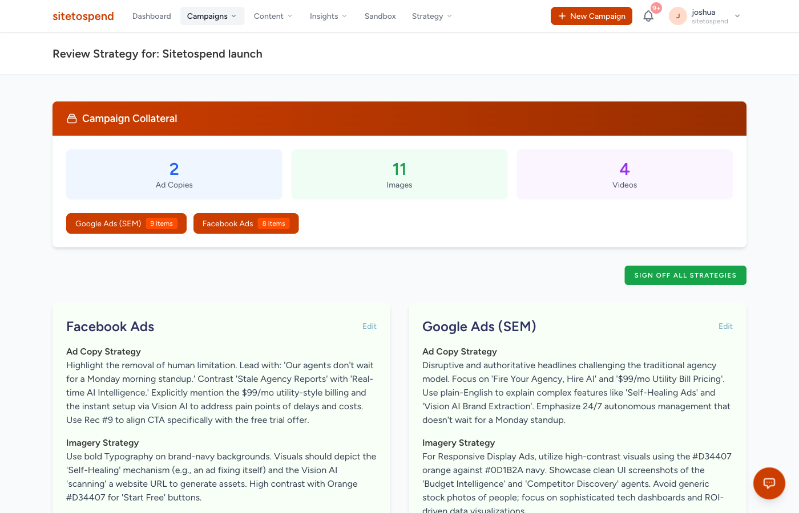
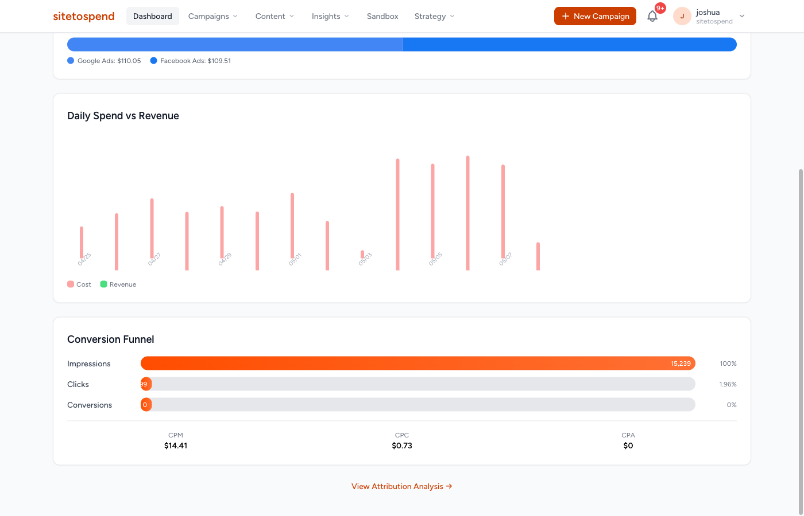
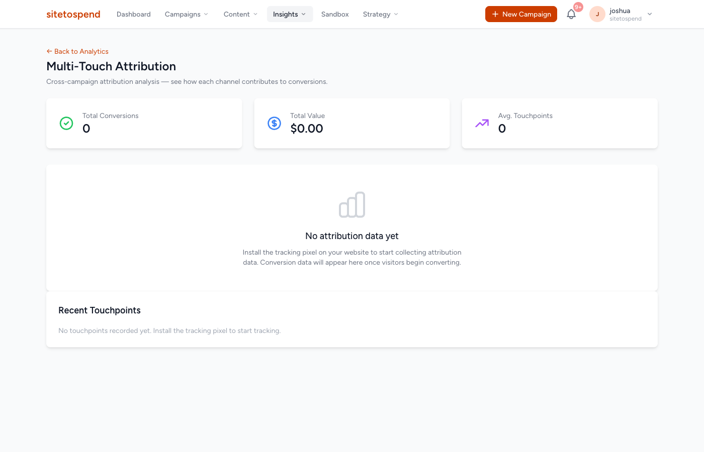
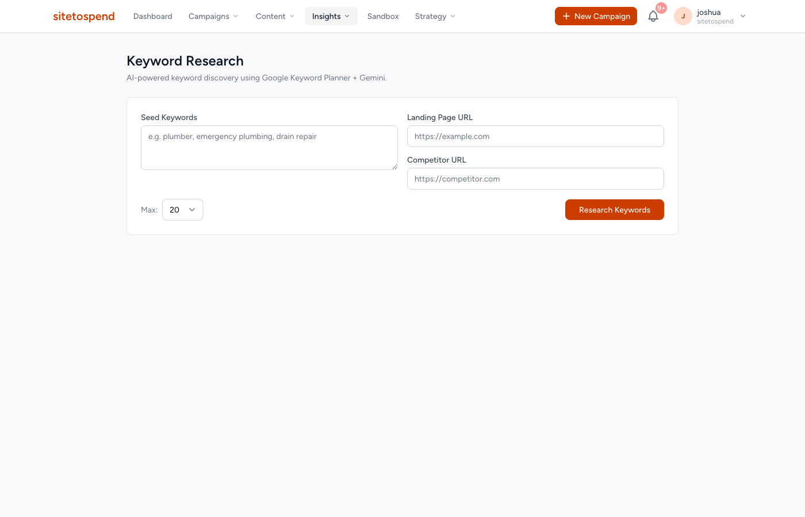

Annotated screenshots from the live Spectra platform at sitetospend.com demonstrating compliance with all Full-Service Tool RMF requirements. Each callout label maps a UI element to its corresponding Google Ads API RMF requirement ID.

| RMF ID | Requirement | UI Implementation |
|---|---|---|
| R.10 | metrics.clicks | Click volume shown in Dashboard overview tab, 30-day default window, filterable to 7d/14d/90d |
| R.10 | metrics.cost_micros | "Ad Spend" card: $219.56 total — sourced from Google Ads + Facebook Ads cost_micros, converted to display currency |
| R.10 | metrics.impressions | Displayed in Platforms tab alongside per-platform breakdown |
| R.10 | metrics.conversions | "Conversions" card — pulled from GoogleAdsService GAQL customer report query |
| R.10 | metrics.all_conversions | ROAS card derives from all_conversions — includes view-through and cross-device conversions |

| RMF ID | Requirement | UI Implementation |
|---|---|---|
| M.110 | Pause/Enable/Remove campaign | Campaign status badge clickable — opens status picker (ENABLED / PAUSED / REMOVED). Applied via CampaignService mutate with campaign.status field mask. |
| R.20 | campaign.status display | "active" badge displayed per campaign row. Campaigns with any status visible in list (not filtered to active-only). |
| C.10 | Create campaign | "+ New Campaign" button navigates to the AI-assisted creation wizard. |
| C.190 | Create ad group | "239 strategies" badge — each strategy maps to a Google Ads ad group deployed via AdGroupService. |

Wizard entry — create campaign (C.10)
Wizard details — geo, language, budget (C.20, C.30, C.120)
| RMF ID | Requirement | UI Implementation |
|---|---|---|
| C.10 | Create campaign | Wizard deploys campaign via CampaignService::mutate(). Supports AI-assisted (conversational) and template-based creation modes. |
| C.20 | Enable geo targeting | Location targeting step — country, region, and city-level selection via CampaignCriterionService with location_constant resources. |
| C.30 | Enable language targeting | Language selector in wizard — applies language_constant criteria to campaign. Defaults to English, multi-language supported. |
| C.96 | Set Target CPA (Portfolio & Standard) | Bidding step offers Target CPA at both standard (campaign.target_cpa) and portfolio (bidding_strategy.target_cpa) levels. |
| C.97 | Set Target ROAS (Portfolio & Standard) | Target ROAS selectable — sets campaign.target_roas or portfolio bidding_strategy.target_roas. |
| C.98 | Set Maximize Conversions | Maximize Conversions bidding option available in wizard; recommended automatically when conversion volume thresholds met. |
| C.120 | Set budget | Daily budget field — creates CampaignBudget resource via CampaignBudgetService::mutate(). |
| C.190 | Create ad group | Wizard generates multiple themed ad groups (one per keyword cluster) via AdGroupService. Each ad group is tracked as a Strategy. |

Keyword Portfolio — R.50, C.260, C.300, M.140

Negative Keyword Lists — C.270
| RMF ID | Requirement | UI Implementation |
|---|---|---|
| R.50 | Keyword View (clicks, cost, impressions, conversions, first_page_cpc, status) | Keyword Portfolio table shows KEYWORD, MATCH, STATUS, QS (Quality Score), SOURCE, CAMPAIGN columns. First-page CPC estimates shown on keyword detail. Status filterable. |
| C.260 | Add keyword | "Research Keywords" flow adds discovered keywords to ad groups via AdGroupCriterionService::mutate(). Bulk add supported. |
| C.300 | Set keyword match type | MATCH column displays BROAD / PHRASE / EXACT. Match type selectable at add-time and editable inline. Maps to ad_group_criterion.keyword.match_type. |
| C.270 | Add campaign negative keywords | Negative Keyword Lists page — shared lists applied across campaigns via CampaignCriterionService with negative=true flag. "New List" creates a shared set. |
| M.140 | Pause/Enable/Remove keyword | STATUS column inline toggle — ENABLED / PAUSED / REMOVED applied via AdGroupCriterionService with ad_group_criterion.status field mask. |

| RMF ID | Requirement | UI Implementation |
|---|---|---|
| R.70 | Search Term View — search_term, match_type, clicks, cost, impressions |
Competitor Keyword Gap page queries search_term_view via GAQL:SELECT search_term_view.search_term, segments.search_term_match_type, metrics.clicks, metrics.cost_micros, metrics.impressions FROM search_term_viewResults displayed with one-click "Add as keyword" and "Add as negative" actions. Search Term Mining Agent continuously processes this report. |

Campaign Strategies — R.20, R.40, M.110, M.130

Performance Trends — R.20, R.130
| RMF ID | Requirement | UI Implementation |
|---|---|---|
| R.20 | Campaign metrics (clicks, cost, impressions, conversions, all_conversions, status) | Campaign Detail shows all required metrics at campaign level. Status badge visible. Daily spend chart shows cost_micros time series. |
| R.40 | Ad Group Ad (clicks, cost, impressions, conversions, ad_group_ad.status) | Each strategy card = ad group ad entry with performance metrics and status control (sign-off / pause). Sourced from ad_group_ad GAQL queries. |
| R.130 | Bidding Strategy (type, clicks, cost, CPA, impressions, avg_cpc, conversions, status) | Spend Allocation bar shows per-channel cost breakdown. Bidding strategy type and performance visible in campaign settings tab. |
| M.10 | Edit campaign settings | Campaign settings editable via the campaign edit form — all creation-time fields exposed for modification via CampaignService mutate. |
| M.96 | Edit Target CPA | CPA target editable in campaign settings. Bidding Intelligence Agent also auto-adjusts based on performance signals. |
| M.97 | Edit Target ROAS | ROAS target editable in campaign settings. Strategy adjustment visible in Activity Log. |
| M.98 | Edit Maximize Conversions | Bidding strategy type switchable to Maximize Conversions when conversion volume thresholds met. |
| M.110 | Pause/Enable/Remove campaign | Campaign status controls on both list view and detail view. Applied via campaign.status field mutation. |
| M.130 | Pause/Enable/Remove ad | "Sign Off All Strategies" and per-strategy sign-off buttons — sets ad_group_ad.status to ENABLED or PAUSED via AdGroupAdService. |

| RMF ID | Requirement | UI Implementation |
|---|---|---|
| C.65 | Create website / call conversion and generate code snippet |
Spectra creates conversion actions via ConversionActionService::mutate(). Two modes supported: Server-side: UploadClickConversionsRequest via gclid — used for signup events. Client-side: gtag.js snippet generated and displayed in the UI for browser-fired events (pricing_visit, sandbox_launched). Conversion action resource names stored in Settings and linked to campaigns automatically. |

| RMF ID | Requirement | UI Implementation |
|---|---|---|
| C.260 | Add keyword to ad group | Keyword Research page — discovers terms via AI + competitor analysis. "Add to Campaign" action calls AdGroupCriterionService::mutate() with KEYWORD criterion type. Supports bulk add with match-type selection. |
| C.75 | Callout extensions (account level) | Callout extensions generated from brand identity extraction (company USPs, key features). Applied at account level via CustomerExtensionSettingService. AI generates 4–10 callouts per account from website content. |